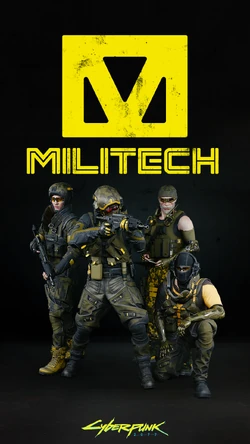
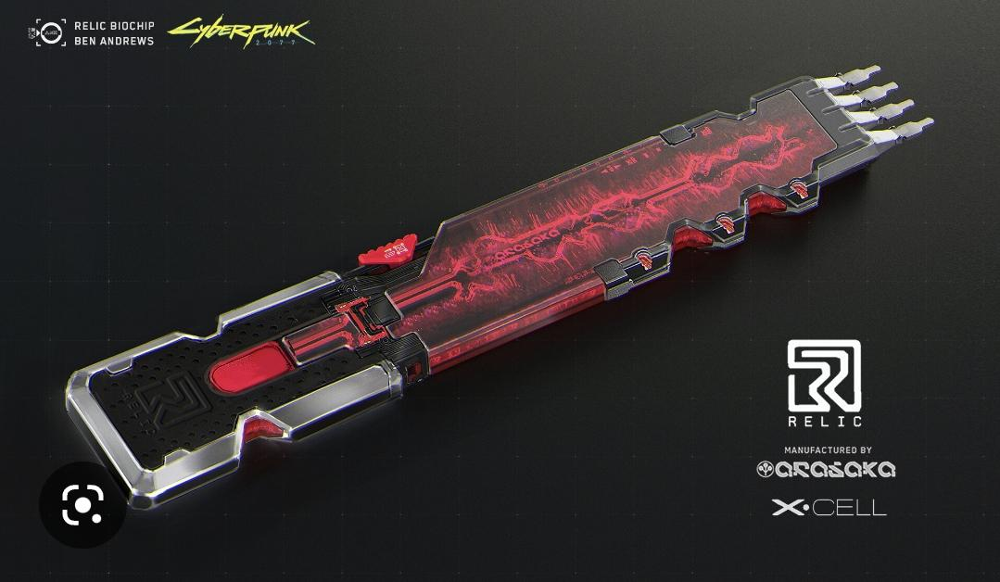

In-depth Explanation of America's Collapse
In the Cyberpunk universe America Collapsing is one of if not the biggest part of the lore, the war itself led to the events of the game.
The biggest reason for the collapse of America was the Mega-Corporations being corrupt and starting proxy wars against each other leading to degradation of infrastructure and security

Further along the timeline Economic Collapse led to Political Instability and Fragmentation, when nobody trusts the government expect militias and gangs to try rise above the government as a whole.
Even though climate change and resource depletion made it harder to develop newer technology, but we can assume that the Mega-Corporations have been working on the future technologies for centuries. Technology advanced further than it ever could in this new dystopian world
